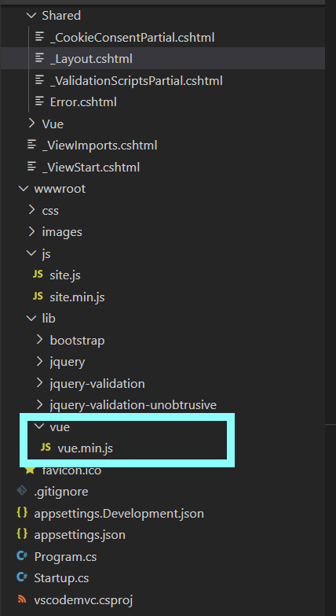

目前只能專注在一方面，所以先用 MVC來開發。
不太想下指令去安裝 vue，，想直接抓js檔下來使用。
先到 Vue官網 下載 js擋下來，放到 wwwroot的lib裡面
自己建立 vue資料夾 來區分各套件

修改 _layout.cshtml 找到引用 js 的地方 加上
<script src="~/lib/vue/vue.min.js"></script>
1 2 3 4 5 6 7 8 <environment include ="Development" > ... 略 <script src ="~/lib/vue/vue.min.js" > </script > </environment > <environment exclude ="Development" > ... 略 <script src ="~/lib/vue/vue.min.js" > </script > </environment >
Controller 底下建立 VueController.cs 1 2 3 4 5 6 7 8 9 10 11 12 13 14 15 16 17 18 using System;using System.Collections.Generic;using System.Diagnostics;using System.Linq;using System.Threading.Tasks;using Microsoft.AspNetCore.Mvc;using vscodemvc.Models;namespace vscodemvc.Controllers { public class VueController : Controller { public IActionResult Index ( return View(); } } }
Views 底下建立Vue資料夾及Index.cshtml檔案 1 2 3 4 5 6 7 8 9 10 11 12 13 14 15 16 17 18 @{ ViewData["Title"] = "Learn Vue"; } <h3 > 利用 Vue 來顯示訊息</h3 > <div id ="app" > {{ message }}</div > @section Scripts { <script type ='text/javascript' > var app = new Vue( { el: '#app' , data: {message: 'Hello Vue!' } }); </script > }
參考資料 .Net Core 網站開發 101
Vue